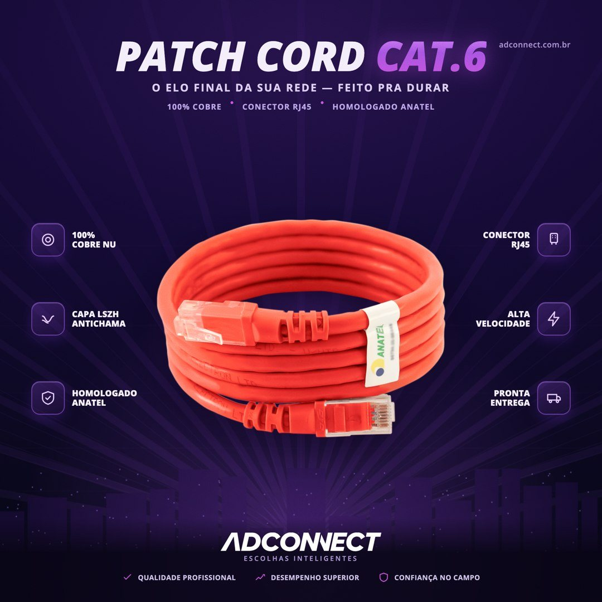
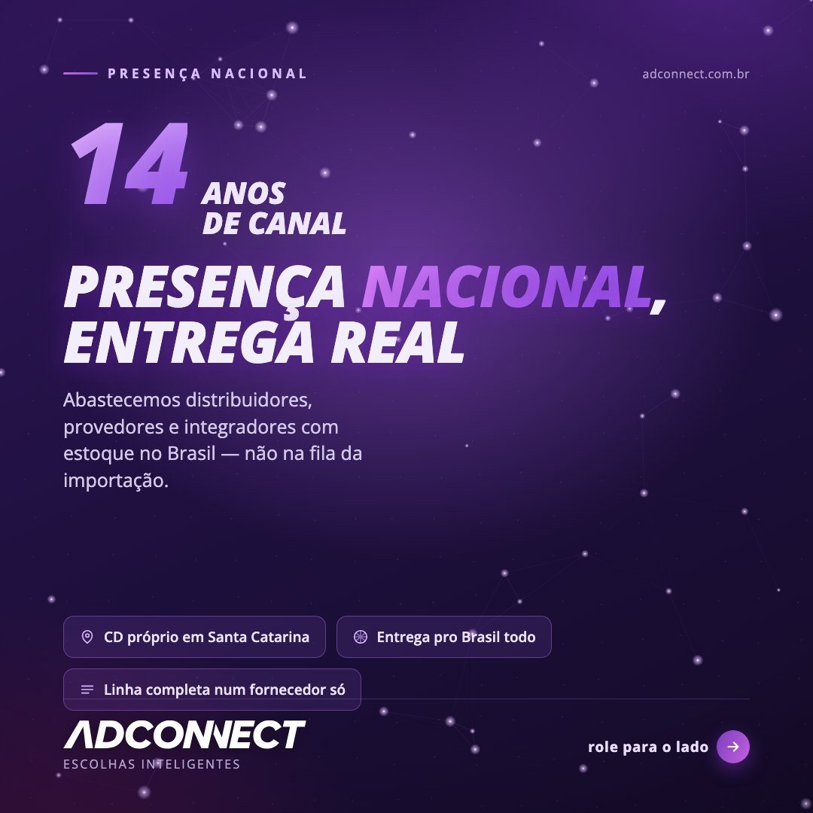
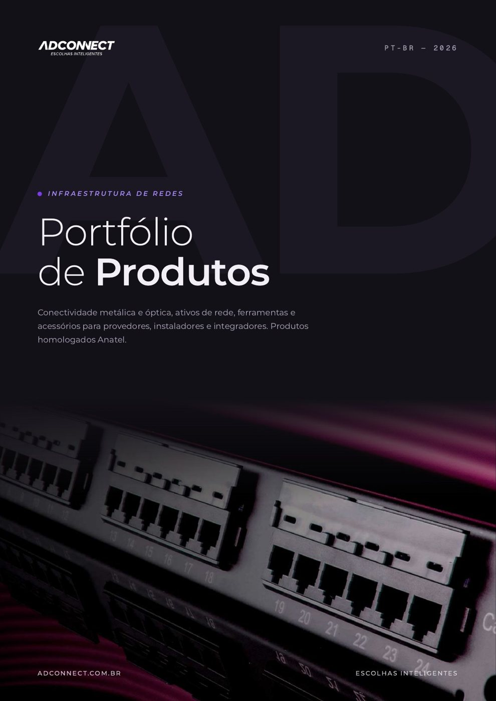
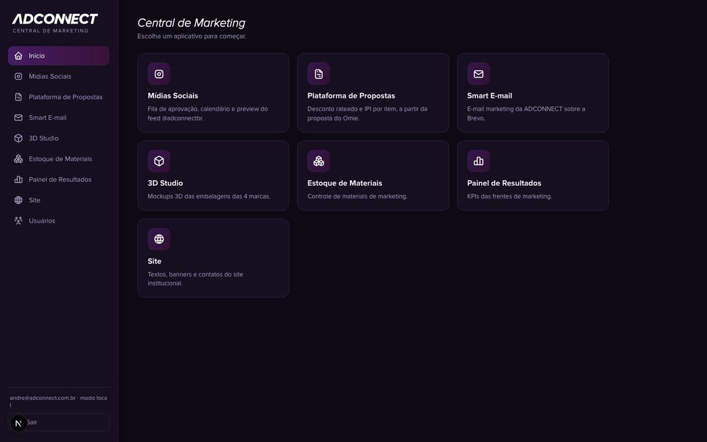
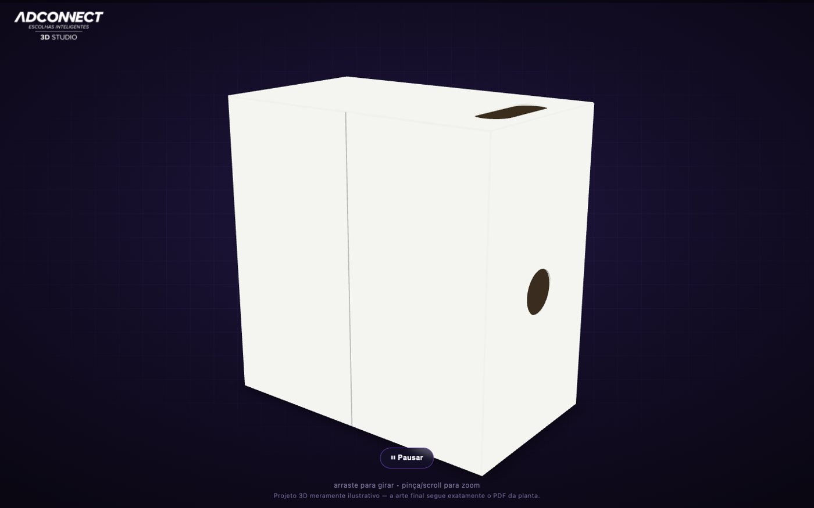

1 · Funnel
From first touch to a qualified conversation with sales
The role asks: build and manage the lead funnel, from lead magnet and landing page to email nurture and a qualified opportunity, and drive conversion, not just lead volume.
- I built email nurture and automation flows from scratch in RD Station, focused on retention and cross-sell. Campaign reach grew 266% and the active customer base went from 150 to 550.
- I built our own email marketing tool on the Brevo API, with campaigns, calendar, segments and reporting.
- I built the company's new website with Claude Code, now in its final stage before launch, with two conversion paths: a quote request and a direct WhatsApp line to the sales team.
- I track funnel KPIs (CAC, LTV, conversion) in dashboards used by leadership.
Case: purchase-schedule campaign with distributors
Goal: get distributors in our base, plus prospects, to commit to their purchase plan for the coming months.
Channels: an email sequence in RD Station plus paid social ads.
A/B tests: email subject line, email creative and ads. I kept each winning version and built the rest of the sequence on top of it.
Result: we hit the 20% closing target within the month, with a positive ROI of about 20%.


2 · Sales collateral
Material that makes a real sales conversation easier
The role asks: keep one-pagers, sales sheets, capability decks and case studies current, on-brand and useful with the sales team.
- I turn engineering data into technical sheets and sales scripts for a portfolio of 150+ products, so distributors and salespeople have a clear argument for each customer.
- I built a proposal generator that pulls the proposal from the CRM and applies the company's visual identity.
- Before marketing I was the Account Manager for our distributors: I cut churn by 15%, raised the average ticket by 20% and hit the monthly portfolio target every month. I know what a salesperson needs in hand.
- For the distributor loyalty program, which I grew by 30%, the headline speaks about the reseller's margin, not the product.



3 · Visual, social and video
Technical topics made simple, in a consistent brand voice
The role asks: multi-format content (written, short-form video, branded visuals) adapted to each platform, on a structured content calendar.
- I plan the editorial calendar by pillar: authority and proof, technical education, product, and the partner program.
- I write the copy and design the posts in Photoshop and Illustrator, and edit video in CapCut.
- I lead the person responsible for social media, with strategy, deadlines and performance reviews.
- At Forcoming, the sneaker e-commerce I founded, I created the store's content for Instagram and TikTok and ran influencer actions.




4 · Paid ads and brand image
Brand image is a trust function
The role asks: own paid ads (LinkedIn and social are a must) and how the brand looks on every digital surface.
- I build and manage Google Ads, Meta Ads and LinkedIn Ads campaigns for launches, promotions and brand communication.
- I look after the visual identity of the group's brands, including a second brand with its own identity.
- I rewrote and reorganized the product catalog into two lines, one per brand, so customers find the right product faster.


5 · AI as leverage
I use AI to go faster, and I edit everything it writes
The role asks: advanced prompting, using AI as leverage and not a crutch, with heavy human editing so nothing feels robotic.
- I use Claude and Gemini every day for research, campaign ideas and first drafts, and I always rewrite them in my own voice before anything goes live.
- I built, with Claude Code, the internal marketing platform used across the company: content approval workflow, proposal generator, email tool and results dashboard.
- With AI support, I delivered 7 complete go-to-market strategies in 14 days.

